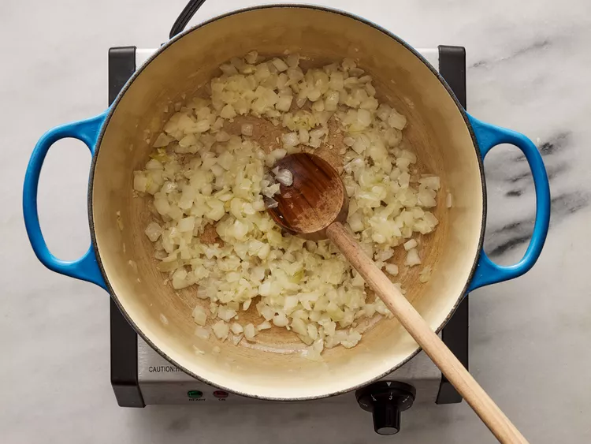

Step 1: Heat cooking oil in a large pot or Dutch oven over medium heat. Add the chopped onion, minced garlic, and sliced ginger. Sauté until fragrant and the onion becomes translucent.
Step 2: Stir in the fish sauce and add the chicken legs and thighs. Cook for a few minutes until the chicken is lightly browned on the outside.
Step 3: Pour in the chicken broth and bring to a boil. Reduce the heat to low, cover the pot, and simmer for about 30 minutes or until the chicken is cooked through and tender.
Step 4: Add the chayote squash to the pot and season with salt and black pepper to taste. Continue simmering for another 10 minutes or until the squash is tender.
Step 5: Stir in the chopped bok choy and fresh spinach. Cook for an additional 2-3 minutes until the greens have wilted.

Step 6: Remove from heat and serve the soup hot. Enjoy!